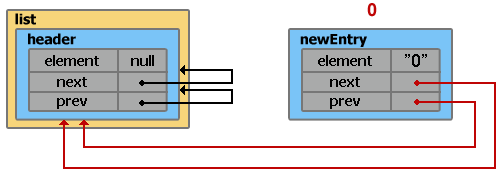
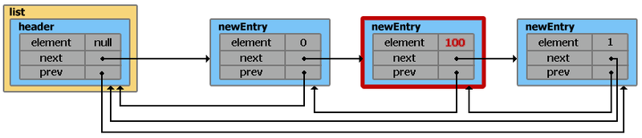
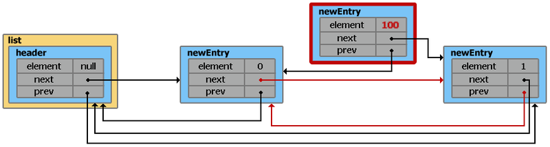

Структуры данных в картинках. LinkedList
Java
Приветствую вас, хабражители!
Продолжаю начатое, а именно, пытаюсь рассказать (с применением визуальных образов) о том как реализованы некоторые структуры данных в Java.
В прошлый раз мы говорили об ArrayList, сегодня присматриваемся к LinkedList.
LinkedList — реализует интерфейс List. Является представителем двунаправленного списка, где каждый элемент структуры содержит указатели на предыдущий и следующий элементы. Итератор поддерживает обход в обе стороны. Реализует методы получения, удаления и вставки в начало, середину и конец списка. Позволяет добавлять любые элементы в том числе и null.
Создание объекта
List<String> list = new LinkedList<String>();
Footprint{Objects=2, References=4, Primitives=[int x 2]}
Object size: 48 bytes
Только что созданный объект list, содержит свойства header и size.
header — псевдо-элемент списка. Его значение всегда равно null, a свойства next и prev всегда указывают на первый и последний элемент списка соответственно. Так как на данный момент список еще пуст, свойства next и prev указывают сами на себя (т.е. на элемент header). Размер списка sizeравен 0.
header.next = header.prev = header;
Добавление элементов
list.add("0");
Footprint{Objects=5, References=8, Primitives=[int x 5, char]}
Object size: 112 bytes
Добавление элемента в конец списка с помощью методом add(value), addLast(value)
и добавление в начало списка с помощью addFirst(value) выполняется за время O(1).
Внутри класса LinkedList существует static inner класс Entry, с помощью которого создаются новые элементы.
private static class Entry<E>
{
E element;
Entry<E> next;
Entry<E> prev;
Entry(E element, Entry<E> next, Entry<E> prev)
{
this.element = element;
this.next = next;
this.prev = prev;
}
}
Каждый раз при добавлении нового элемента, по сути выполняется два шага:
1) создается новый новый экземпляр класса Entry
Entry newEntry = new Entry("0", header, header.prev);

2) переопределяются указатели на предыдущий и следующий элемент
newEntry.prev.next = newEntry;
newEntry.next.prev = newEntry;
size++;
list.add("1");
Footprint{Objects=8, References=12, Primitives=[int x 8, char x 2]}
Object size: 176 bytes
1)
// header.prev указывает на элемент с индексом 0
Entry newEntry = new Entry("1", header, header.prev);
Добавление элементов в «середину» списка
Для того чтобы добавить элемент на определенную позицию в списке, необходимо вызвать метод add(index, value). Отличие от add(value) состоит в определении элемента перед которым будет производиться вставка
(index == size ? header : entry(index))
Метод entry(index) пробегает по всему списку в поисках элемента с указанным индексом. Направление обхода определяется условием (index < (size >> 1)). По факту получается что для нахождения нужного элемента перебирается не больше половины списка, но с точки зрения асимптотического анализа время на поиск растет линейно — O(n).
private Entry<E> entry(int index)
{
if (index < 0 || index >= size)
throw new IndexOutOfBoundsException("Index: "+index+", Size: "+size);
Entry<E> e = header;
if (index < (size >> 1))
{
for (int i = 0; i <= index; i++)
e = e.next;
}
else
{
for (int i = size; i > index; i--)
e = e.prev;
}
return e;
}
Как видно, разработчик может словить IndexOutOfBoundsException, если указанный индекс окажется отрицательным или большим текущего значения size. Это справедливо для всех методов где в параметрах фигурирует индекс.
list.add(1, "100");
Footprint{Objects=11, References=16, Primitives=[int x 11, char x 5]}
Object size: 248 bytes
1)
// entry указывает на элемент с индексом 1, entry.prev на элемент с индексом 0
Entry newEntry = new Entry("100", entry, entry.prev);
Удаление элементов
Удалять элементы из списка можно несколькими способами:
— из начала или конца списка с помощью removeFirst(), removeLast() за время O(1);
— по индексу remove(index) и по значению remove(value) за время O(n).
Рассмотрим удаление по значению
list.remove("100");
Footprint{Objects=8, References=12, Primitives=[int x 8, char x 2]}
Object size: 176 bytes
Внутри метода remove(value) просматриваются все элементы списка в поисках нужного. Удален будет лишь первый найденный элемент.
В общем, удаление из списка можно условно разбить на 3 шага:
1) поиск первого элемента с соответствующим значением

2) переопределяются указатели на предыдущий и следующий элемент
// Значение удаляемого элемента сохраняется
// для того чтобы в конце метода вернуть его
E result = e.element;
e.prev.next = e.next;
e.next.prev = e.prev;

3) удаление указателей на другие элементы и предание забвению самого элемента
e.next = e.prev = null;
e.element = null;
size--;
Итераторы
Для собственноручного перебора элементов можно воспользоваться «встроенным» итератором. Сильно углубляться не буду, процессы протекающие внутри, очень похожи на то что описано выше.
ListIterator<String> itr = list.listIterator();
Приведенный выше код поместит указатель в начало списка. Так же можно начать перебор элементов с определенного места, для этого нужно передать индекс в метод listIterator(index). В случае, если необходимо начать обход с конца списка, можно воспользоваться методом descendingIterator().
Стоит помнить, что ListIterator свалится с ConcurrentModificationException, если после создания итератора, список был изменен не через собственные методы итератора.
Ну и на всякий случай примитивный пример перебора элементов:
while (itr.hasNext())
System.out.println(itr.next());
Итоги
— Из LinkedList можно организовать стэк, очередь, или двойную очередь, со временем доступа O(1);
— На вставку и удаление из середины списка, получение элемента по индексу или значению потребуется линейное время O(n). Однако, на добавление и удаление из середины списка, используя ListIterator.add() и ListIterator.remove(), потребуется O(1);
— Позволяет добавлять любые значения в том числе и null. Для хранения примитивных типов использует соответствующие классы-оберки;
— Не синхронизирован.
{kind=link}
{kind=link}
{kind=link}
{kind=link}
{kind=link}
{kind=link}
{kind=link}
{kind=link}
{kind=link}